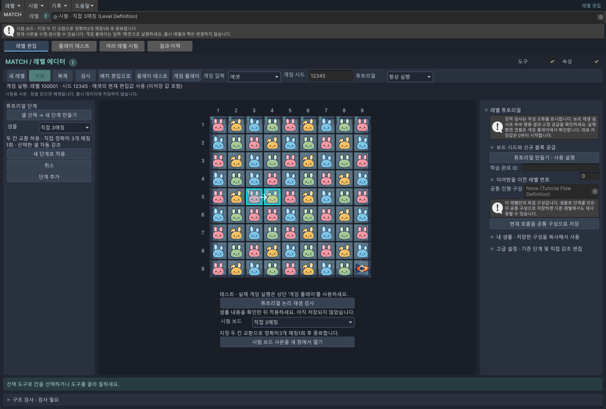
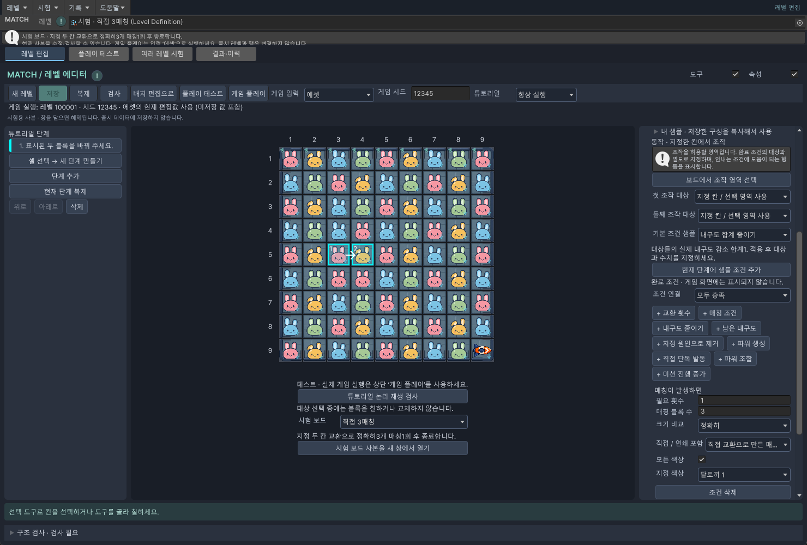
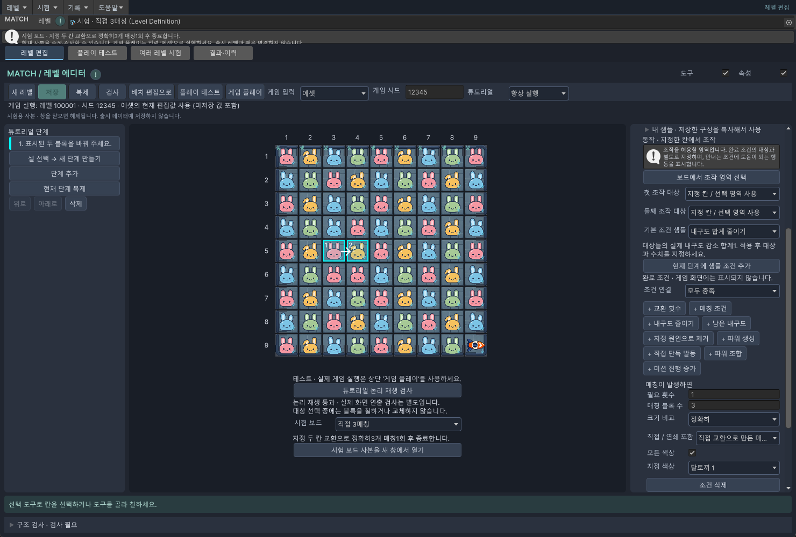

추가 · 튜토리얼 따라하기
① 일반 블록 3매칭
두 칸 고르기 → 조건 정하기 → 안내 쓰기 → 직접 해 보기.
준비 시험 보드를 여는 방법을 먼저 확인하세요. 사진 속 행·열은 보드 가장자리의 1~9 숫자를 기준으로 읽습니다.
이번에 만들 안내
플레이어가 지정한 두 칸을 바꾸고, 같은 색 블록 3개가 연결되면 안내가 끝납니다.
단계는 안내 한 장입니다. 이번에는 한 장만 만듭니다. 동작은 “어느 두 칸을 바꿀까?”, 조건은 “정말 3개를 맞췄을까?”입니다.
1. 빈 단계에서 직접 시작하기
- 시험 보드 열기에서 직접 3매칭을 고르고 시험 보드 사본을 새 창에서 열기를 누릅니다. 새 창의 레벨 이름이 시험 · 직접 3매칭인지 확인합니다.
- 왼쪽의 기존 1단계를 누르고 삭제를 누릅니다. 이 연습 창에서만 삭제하세요. 보드의 블록은 그대로이고 안내 단계만 없어집니다.
- 셀 선택 → 새 단계 만들기를 누릅니다. “셀”은 보드의 네모 한 칸입니다.
- 5행 3열의 분홍 블록을 한 번 누릅니다. 이어서 바로 오른쪽인 5행 4열의 노란 블록을 한 번 누릅니다. 여기서는 드래그하지 않고 두 번 따로 클릭합니다.
- 왼쪽 미리보기의 샘플에서 직접 3매칭을 선택합니다. 새 단계로 적용을 눌러야 실제 단계가 생깁니다. 취소하려면 취소 또는 Esc를 누릅니다.
왼쪽에 1단계가 생기고, 보드의 두 칸에 선택 표시가 나오면 여기까지 성공입니다.

2. “3개를 한 번 맞추면 끝”으로 정하기
왼쪽에서 방금 만든 단계를 선택하고 오른쪽 설정을 아래로 내립니다. 매칭이 발생하면 부분을 다음처럼 맞추세요.
| 화면의 항목 | 넣을 값 | 쉬운 뜻 |
|---|---|---|
| 필요 횟수 | 1 | 매칭 한 번이면 끝납니다. |
| 매칭 블록 수 | 3 | 한 묶음에 블록 3개가 있어야 합니다. |
| 크기 비교 | 정확히 | 4개나 5개 매칭은 이번 조건이 아닙니다. |
| 직접 / 연쇄 포함 | 직접 교환으로 만든 매칭만 | 떨어진 뒤 우연히 맞춰진 것은 세지 않습니다. |
| 모든 색상 | 체크 | 이번에는 색상 제한 없이 3개 연결만 확인합니다. |
직접 3매칭 샘플에는 이 조건이 들어 있습니다. + 매칭 조건을 또 누르지 않아도 됩니다. 반대로 “지정한 두 칸 교환”으로 만들었다면 기존 교환 조건의 조건 삭제를 누르고 + 매칭 조건을 추가해 위 값을 넣습니다.

더 아래의 안내 문구에 “분홍 달토끼를 오른쪽으로 옮겨서 3개를 연결해 주세요.”라고 적습니다. 대상과 조작 셀 자동 강조는 체크합니다. 게임에서는 조작할 곳을 투명하게 보여 주고 나머지는 어둡게 가립니다.
3. 나중에 위치나 설명을 고치려면
- 왼쪽에서 고칠 단계를 누릅니다. 먼저 선택하지 않으면 다른 단계를 고칠 수 있습니다.
- 위치를 바꾸려면 오른쪽 아래 보드에서 교환 두 칸 선택을 누르고 새 첫 칸, 새 둘째 칸을 차례로 누릅니다. 반드시 이웃한 칸을 고릅니다.
- 횟수나 색상을 바꾸려면 해당 조건의 숫자·선택 상자를 고칩니다. 특정 색만 세려면 모든 색상을 해제하고 지정 색상을 고릅니다.
- 설명을 바꾸려면 안내 문구를 고칩니다. 순서를 바꾸려면 왼쪽 위로 / 아래로, 비슷한 단계를 더 만들려면 현재 단계 복제를 사용합니다.
복제한 단계는 값이 같으므로, 두 번째 행동에 맞게 조작 칸과 조건을 다시 정하세요. 첫 행동 뒤에는 블록이 떨어져 배치가 바뀝니다.
4. 실제로 되는지 확인하기
- 보드 아래 튜토리얼 논리 재생 검사를 누릅니다. 논리 재생 통과가 보여야 합니다.
- 상단 게임 입력 = 에셋, 튜토리얼 = 항상 실행으로 맞추고 게임 플레이를 누릅니다.
- 안내대로 분홍 블록을 오른쪽으로 밀어 봅니다. 4열에서 분홍 3개가 연결되고 단계가 끝나는지 확인합니다.

이 보드는 임시 연습용이라 일반 저장으로 출시 레벨이 되지 않습니다. 작업 레벨에 옮기고 저장하는 순서를 따라가세요.
변경 이력 · 확인 범위
2026-10-08 · 추가 · 짧은 기능 소개에서 실제 선택 순서·입력값·변경·확인 방법을 갖춘 예제로 확장했습니다. 사용자 요청에 따른 초보자용 안내입니다.
Windows / Unity 6000.3.10f1. 임시 시험 보드의 실제 에디터 화면 캡처와 논리 재생을 확인했습니다. 실기기 터치 검사는 이번 문서 작업에 포함하지 않았습니다. 화면 속 시험 보드는 출시 레벨을 변경하지 않습니다.
문서 표시 확인 · 2026-10-08 · Chrome 1440px / 390px · 내부 링크·이미지 정상. 폴더 복사 후 오프라인 파일 열기와 목차 왕복 확인.